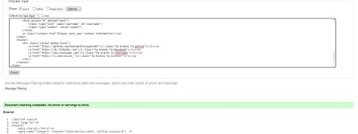
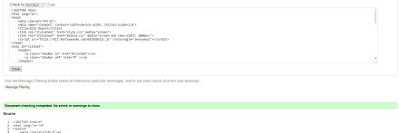
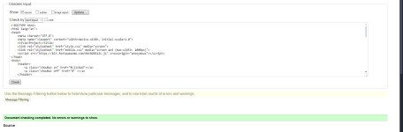

Reflection
In this section, I will talk about what I learnt while using HTML and CSS, why I made my decisions and how I overcame my difficulties in this module.
Ups and downs
Most of the coding for the desktop view was mostly simple. Creating the navigation bar was simple once I understood how to make it, however on the mobile version of the website I found it difficult to make the hamburger make the navigation turn off and on. After a while I figured out how to make the navigation menu appear when clicking the hamburger icon. Remodeling the layout for the mobile version was also difficult since I had to resize every text, move the navigation bar, and also use a different grid for the project page to keep the images in place and not off screen. Creating the animation of the ball was okay but making sure that the ball doesn't go off screen was difficult since I had to retry multiple times to determine which coordinates is appropriate.
Design
The color scheme that I have decided to go for is purple black and white. I have decided to go with this because it is a different color to use which stands out and makes the website look nice. The layout of the website that I have chosen is nav at the top, heading below the nav, the content I the middle and the footer being at the bottom. I have chosen this layout because in my opinion the navigation looks better at the top instead of the header being on top and the navigation bar being below the header. For the project page, I have decided to use the grid layout using the repeat. This makes the layout look neat and with the border it clearly separates each project.